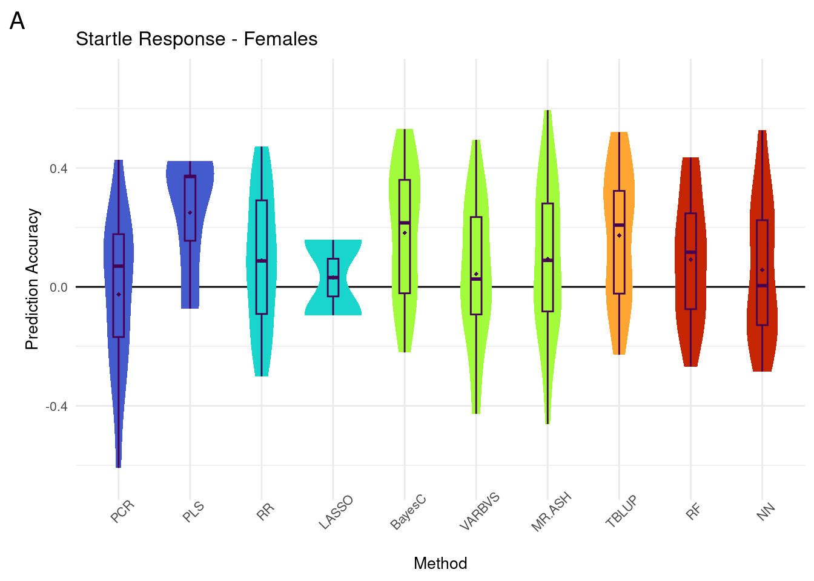

Last updated: 2024-10-15
Checks: 7 0
Knit directory: dgrp-starve/
This reproducible R Markdown analysis was created with workflowr (version 1.7.1). The Checks tab describes the reproducibility checks that were applied when the results were created. The Past versions tab lists the development history.
Great! Since the R Markdown file has been committed to the Git repository, you know the exact version of the code that produced these results.
Great job! The global environment was empty. Objects defined in the global environment can affect the analysis in your R Markdown file in unknown ways. For reproduciblity it’s best to always run the code in an empty environment.
The command set.seed(20221101) was run prior to running the code in the R Markdown file. Setting a seed ensures that any results that rely on randomness, e.g. subsampling or permutations, are reproducible.
Great job! Recording the operating system, R version, and package versions is critical for reproducibility.
Nice! There were no cached chunks for this analysis, so you can be confident that you successfully produced the results during this run.
Great job! Using relative paths to the files within your workflowr project makes it easier to run your code on other machines.
Great! You are using Git for version control. Tracking code development and connecting the code version to the results is critical for reproducibility.
The results in this page were generated with repository version 9e41967. See the Past versions tab to see a history of the changes made to the R Markdown and HTML files.
Note that you need to be careful to ensure that all relevant files for the analysis have been committed to Git prior to generating the results (you can use wflow_publish or wflow_git_commit). workflowr only checks the R Markdown file, but you know if there are other scripts or data files that it depends on. Below is the status of the Git repository when the results were generated:
Ignored files:
Ignored: .Rhistory
Ignored: .Rproj.user/
Ignored: .snakemake/
Ignored: benchmark/
Ignored: code/BACKUPS/
Ignored: data/
Ignored: rdata/
Ignored: snake/.snakemake/
Ignored: snake/data/
Ignored: snake/logs/
Ignored: snakelogs/
Ignored: zz_lost/
Untracked files:
Untracked: Rplots.pdf
Untracked: analysis/backupTRACE.R
Untracked: analysis/bayes_trace.Rmd
Untracked: analysis/starve_REVAMP.Rmd
Untracked: code/dataprocess/ag_ids.R
Untracked: code/dataprocess/match_aggress.R
Untracked: code/dataprocess/matcher.R
Untracked: code/figures/startle/
Untracked: code/figures/tif/
Untracked: code/filter/startleBlupGO.R
Untracked: code/go/startleTerms.R
Untracked: code/go/startle_tblupGO.R
Untracked: code/snakefiles/nnfile.yaml
Untracked: code/snakefiles/startleGO.yaml
Untracked: code/snakefiles/startle_figfile.yaml
Untracked: code/snakefiles/startlefile.yaml
Untracked: code/snakefiles/tiffile.yaml
Untracked: code/startle/
Untracked: output/figs/Fig1.tif
Untracked: output/figs/Fig2.tif
Untracked: output/figs/Fig3.tif
Untracked: output/figs/S1_Fig.tif
Untracked: output/figs/S2_Fig.tif
Untracked: output/figs/S3_Fig.pdf
Untracked: output/figs/S4_Fig.pdf
Untracked: output/figs/S5_Fig.pdf
Untracked: output/figs/S6_Fig.pdf
Untracked: output/tabs/startle_geneBayesF.csv
Untracked: output/tabs/startle_geneBayesM.csv
Untracked: output/tabs/startle_geneTblupF.csv
Untracked: output/tabs/startle_geneTblupM.csv
Untracked: output/tabs/startle_goBayesF.csv
Untracked: output/tabs/startle_goBayesM.csv
Untracked: output/tabs/startle_goTblupF.csv
Untracked: output/tabs/startle_goTblupM.csv
Untracked: output/tabs/startle_standardF.csv
Untracked: output/tabs/startle_standardM.csv
Untracked: output/tabs/startle_sup_geneBayesF.csv
Untracked: output/tabs/startle_sup_geneBayesM.csv
Untracked: output/tabs/startle_sup_geneTblupF.csv
Untracked: output/tabs/startle_sup_geneTblupM.csv
Untracked: output/tifs/
Untracked: reset.R
Unstaged changes:
Modified: .gitignore
Modified: analysis/index.Rmd
Modified: code/figures/fig3_scatter.R
Modified: code/figures/standard_paper.R
Modified: code/figures/sup_sparseHist.R
Modified: code/go/tblupGO.R
Modified: code/sr/pcr_pls.R
Modified: dgrp-starve.Rproj
Modified: output/figs/Fig1.pdf
Modified: output/figs/Fig2.pdf
Modified: output/figs/Fig3.pdf
Modified: output/figs/S1_Fig.pdf
Modified: output/figs/S2_Fig.pdf
Modified: smake.sbatch
Modified: snake.sbatch
Modified: snake/slurm/config.yaml
Note that any generated files, e.g. HTML, png, CSS, etc., are not included in this status report because it is ok for generated content to have uncommitted changes.
These are the previous versions of the repository in which changes were made to the R Markdown (analysis/startle_report.Rmd) and HTML (docs/startle_report.html) files. If you’ve configured a remote Git repository (see ?wflow_git_remote), click on the hyperlinks in the table below to view the files as they were in that past version.
| File | Version | Author | Date | Message |
|---|---|---|---|---|
| Rmd | 9e41967 | nklimko | 2024-10-15 | wflow_publish(“analysis/startle_report.Rmd”) |
finalLabel <- function(data){
names(data) <- c('PCR', 'PLS', 'RR', 'LASSO', 'BayesC', 'VARBVS', 'MR.ASH', 'TBLUP', 'RF', 'NN')
halfdata <- melt(data)
type <- c(rep('Dimension Reduction', 50), rep('Penalized', 50), rep('Bayesian', 75), rep('Mixed Model', 25), rep('Machine Learning', 50))
typeRank <- c(rep(1, 50), rep(2, 50), rep(3, 75), rep(4, 25), rep(5, 50))
select <- c(rep(0,75), rep(1,100), rep(0,25), rep(1,25), rep(0,25))
tableStep <- cbind(halfdata, type, typeRank = as.factor(typeRank), varSelect = as.factor(select))
#final <- na.omit(tableStep)
final <- tableStep
names(final) <- c('Method', 'Cor', 'Type', 'TypeRank', 'varSelect')
return(final)
}
ggMakePaper <- function(data, sex, yint, psize, custom.title, custom.Xlab, custom.Ylab, scaleStart, scaleEnd){
plothole <- ggplot(data,aes(y=Cor,x=Method, fill=TypeRank))+
geom_hline(yintercept = yint)+
labs(x=custom.Xlab,y=custom.Ylab, tag=sex, title=custom.title, fill='Method Type') +
geom_violin(color = NA, width = 0.8) +
geom_boxplot(color='#440154FF', width = 0.15, outlier.size = 1) +
theme_minimal()+
ylim(-0.65, 0.7)+
theme(axis.text.x = element_text(angle = 45),
text=element_text(size=10),
legend.position="none",
plot.tag = element_text(size=15),
legend.text = element_text(size=8),
legend.title = element_text(size=10)) +
scale_fill_viridis(begin = scaleStart, end = scaleEnd, discrete=TRUE, option='turbo',
labels=c('Dimension Reduction', 'Penalized', 'Bayesian', 'Mixed Model', 'Machine Learning'))+#false discrete for number ranked layover, true normally
stat_summary(fun=mean, color='#440154FF', geom='point',
shape=18, size=1, show.legend=TRUE)
return(plothole)
}
score_plot <- function(raw) {
means <- colMeans(raw, na.rm=1)
nas <- sapply(raw, function(x){sum(is.na(x))})
reps <- dim(raw)[1]
data <- data.table(method=names(means), cor=means, score=(reps-nas) / reps)
gg <- ggplot(data, aes(x=score, y=cor, label=method))+
geom_point(size=1)+
geom_label_repel(aes(label=method), min.segment.length = 0)
return(gg)
}fata <- readRDS('snake/data/startle/40_all/f/histData.Rds')
mata <- readRDS('snake/data/startle/40_all/m/histData.Rds')
dataF <- finalLabel(fata)No id variables; using all as measure variablesdataM <- finalLabel(mata)No id variables; using all as measure variablesgg[[1]] <- ggMakePaper(dataF, 'A', 0, 1, 'Startle Response - Females', 'Method', 'Prediction Accuracy', 0.1, 0.9)
gg[[2]] <- ggMakePaper(dataM, 'B', 0, 1, 'Startle Response - Males', 'Method', 'Prediction Accuracy', 0.1, 0.9)### 25 replicates -----------
f_nas <- sapply(fata, function(x){sum(is.na(x))})
m_nas <- sapply(mata, function(x){sum(is.na(x))})
Sex <- rep(c('f','m'), each=10)
all_nas <- c(f_nas, m_nas)
demo <- data.table(Sex, Method=names(all_nas), NA_Counts=all_nas)
gg[[3]] <- ggplot(demo, aes(x=Method, y=NA_Counts, fill=Sex))+
geom_bar(stat="identity", position=position_dodge())+
theme_minimal()+
labs(title="Startle Response: NAs out of 25 replicates")
### 150 replicates -----------
f150 <- readRDS('snake/data/startle/40_all/150/f/histData.Rds')
m150 <- readRDS('snake/data/startle/40_all/150/m/histData.Rds')
f_nas <- sapply(f150, function(x){sum(is.na(x))})
m_nas <- sapply(m150, function(x){sum(is.na(x))})
Sex <- rep(c('f','m'), each=10)
all_nas <- c(f_nas, m_nas)
demo <- data.table(Sex, Method=names(all_nas), NA_Counts=all_nas)
gg[[4]] <- ggplot(demo, aes(x=Method, y=NA_Counts, fill=Sex))+
geom_bar(stat="identity", position=position_dodge())+
theme_minimal()+
labs(title="Startle Response: NAs out of 150 replicates")gg[[5]] <- score_plot(mata)
gg[[6]] <- score_plot(fata)f_means <- readRDS('snake/data/startle/40_all/f/meanData.Rds')
m_means <- readRDS('snake/data/startle/40_all/m/meanData.Rds')
f_means$cor <- as.numeric(f_means$cor)
m_means$cor <- as.numeric(m_means$cor)
gg[[7]] <- ggplot(f_means, aes(x=method, y=cor))+
geom_bar(stat='identity', fill='red')+
ggtitle("Prediction accuracy - Females")
gg[[8]] <- ggplot(m_means, aes(x=method, y=cor))+
geom_bar(stat='identity', fill='turquoise')+
ggtitle("Prediction accuracy - Males")#standard F
plot_grid(gg[[1]], ncol=1)Warning: Removed 64 rows containing non-finite values (`stat_ydensity()`).Warning: Removed 64 rows containing non-finite values (`stat_boxplot()`).Warning: Removed 64 rows containing non-finite values (`stat_summary()`).
#standard M
plot_grid(gg[[2]], ncol=1)Warning: Removed 31 rows containing non-finite values (`stat_ydensity()`).Warning: Removed 31 rows containing non-finite values (`stat_boxplot()`).Warning: Removed 31 rows containing non-finite values (`stat_summary()`).#NAs
plot_grid(gg[[3]], gg[[4]], ncol=1)Increasing the iteration count from 25 to 150 yields similar failure rates for model convergence. As such, we are sticking to the 25 replicates data in our analysis, noting the number of successful replicates per method where appropriate.
#Score plots
plot_grid(gg[[5]], gg[[6]], ncol=1)Score indicates the number of successful trials out of 25 replicates, where a score of 1 means all replicates produced models. Cor is the mean prediction accuracy across successful replicates in the 25-replicate data
#Raw Means
plot_grid(gg[[7]], gg[[8]], ncol=1)Simpler visual depiction of top methods. PLSR, BayesC, and TBLUP are the top 3 for both sexes. In males, random forest and MR ASH perform “better” than other methods (anecdotal, no tests performed). The same methods are also ranked 4th and 5th in females, but are less distinguished from the bottom 5 methods.
sessionInfo()R version 4.1.2 (2021-11-01)
Platform: x86_64-pc-linux-gnu (64-bit)
Running under: Rocky Linux 8.5 (Green Obsidian)
Matrix products: default
BLAS/LAPACK: /opt/ohpc/pub/libs/gnu9/openblas/0.3.7/lib/libopenblasp-r0.3.7.so
locale:
[1] LC_CTYPE=en_US.UTF-8 LC_NUMERIC=C
[3] LC_TIME=en_US.UTF-8 LC_COLLATE=en_US.UTF-8
[5] LC_MONETARY=en_US.UTF-8 LC_MESSAGES=en_US.UTF-8
[7] LC_PAPER=en_US.UTF-8 LC_NAME=C
[9] LC_ADDRESS=C LC_TELEPHONE=C
[11] LC_MEASUREMENT=en_US.UTF-8 LC_IDENTIFICATION=C
attached base packages:
[1] stats graphics grDevices utils datasets methods base
other attached packages:
[1] ggrepel_0.9.5 reshape2_1.4.4 melt_1.10.0 ggcorrplot_0.1.4.1
[5] lubridate_1.9.3 forcats_1.0.0 stringr_1.5.1 purrr_1.0.2
[9] readr_2.1.4 tidyr_1.3.1 tibble_3.2.1 tidyverse_2.0.0
[13] scales_1.2.1 viridis_0.6.4 viridisLite_0.4.2 qqman_0.1.9
[17] cowplot_1.1.1 ggplot2_3.4.4 data.table_1.15.4 dplyr_1.1.3
[21] workflowr_1.7.1
loaded via a namespace (and not attached):
[1] Rcpp_1.0.12 getPass_0.2-2 ps_1.7.7 rprojroot_2.0.4
[5] digest_0.6.36 utf8_1.2.4 plyr_1.8.9 R6_2.5.1
[9] evaluate_0.24.0 highr_0.11 httr_1.4.7 pillar_1.9.0
[13] rlang_1.1.4 rstudioapi_0.16.0 whisker_0.4.1 callr_3.7.6
[17] jquerylib_0.1.4 rmarkdown_2.27 labeling_0.4.3 munsell_0.5.0
[21] compiler_4.1.2 httpuv_1.6.12 xfun_0.45 pkgconfig_2.0.3
[25] htmltools_0.5.8.1 tidyselect_1.2.1 gridExtra_2.3 fansi_1.0.6
[29] calibrate_1.7.7 tzdb_0.4.0 withr_3.0.0 later_1.3.2
[33] MASS_7.3-60 grid_4.1.2 jsonlite_1.8.8 gtable_0.3.4
[37] lifecycle_1.0.4 git2r_0.32.0 magrittr_2.0.3 cli_3.6.3
[41] stringi_1.8.4 cachem_1.1.0 farver_2.1.1 fs_1.6.4
[45] promises_1.3.0 bslib_0.7.0 generics_0.1.3 vctrs_0.6.5
[49] tools_4.1.2 glue_1.7.0 hms_1.1.3 processx_3.8.4
[53] fastmap_1.2.0 yaml_2.3.8 timechange_0.2.0 colorspace_2.1-0
[57] knitr_1.47 sass_0.4.9